ASAv¶
AWS¶
Important Caveats¶
Launching through the AWS Marketplace does not allow you to input the Day 0 Configuration, which means you will not be able to contact the device. Ensure that you create the ASAv via EC2 > Launch Instance.
Also note that if you want to test the difference between BYOL and standard, whichever you subscribe to last will change the subscription of all ASAvs.
The initial interface that gets created with the ASAv cannot be deleted or dissociated and is exclusively used for the management interface. The second interface you associate is g0/0, the third interface is g0/1, etc. If you remove g0/0, g0/1 will become g0/1.
You need to reboot the ASAv after modifying the interfaces.
You need to license the ASAv before the ASA allows AnyConnect configuration.
ASAv AnyConnect can only be done via Smart Licensing. The ASAv License can be done via the BYOL or Standard AWS license models.
Useful Links¶
Launch Steps¶
The process to launch a BYOL ASAv as opposed to the Standard AWS ASAv is the same:
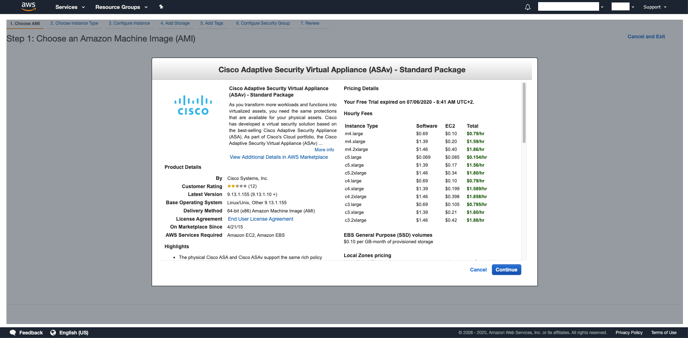c4.large is the recommended size (to start with):
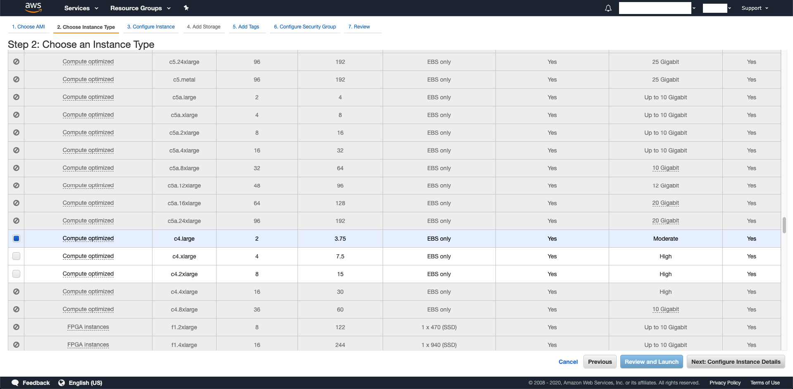Configure your network settings:
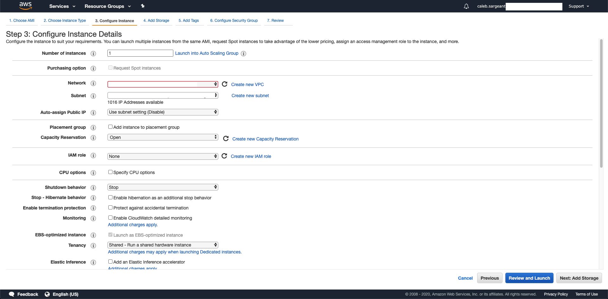Configure ASAv interfaces and set day 0 configuration.
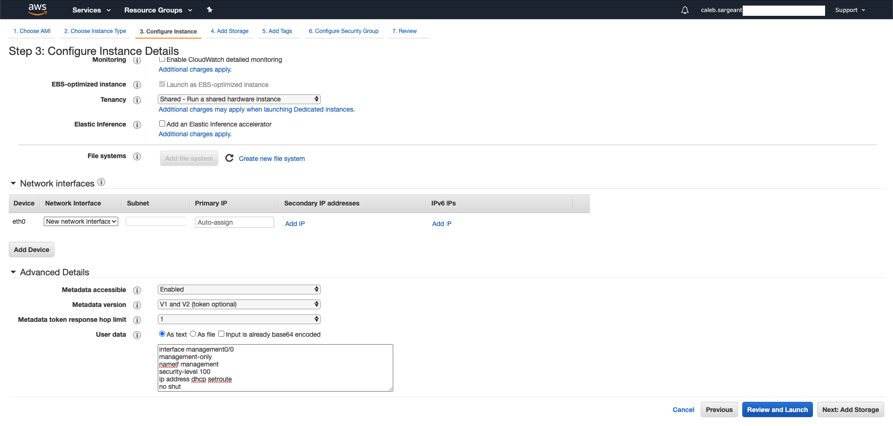Skip Storage and Tags, select (or create) your Security Group for ASAv:
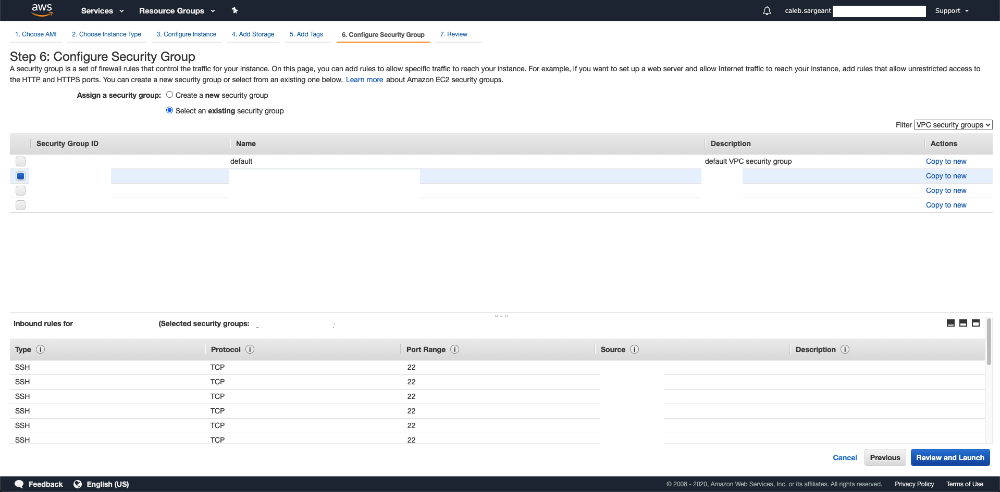Select or create the Key Pair for your ASAv:
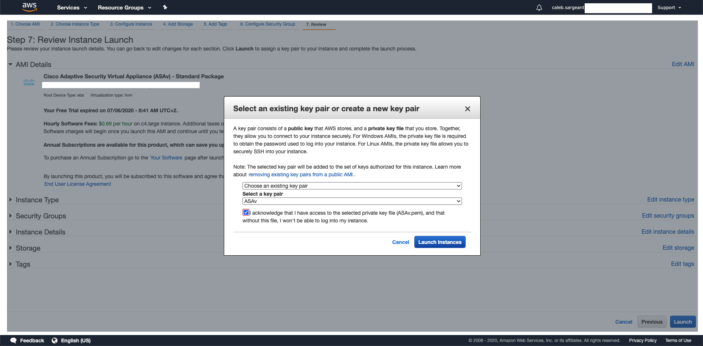Then, create 2 network interfaces, one in your public subnet (outside), to attach elastic IP, and the other in your private subnet (inside) via EC2 > Network Interfaces > Create Network Interface:
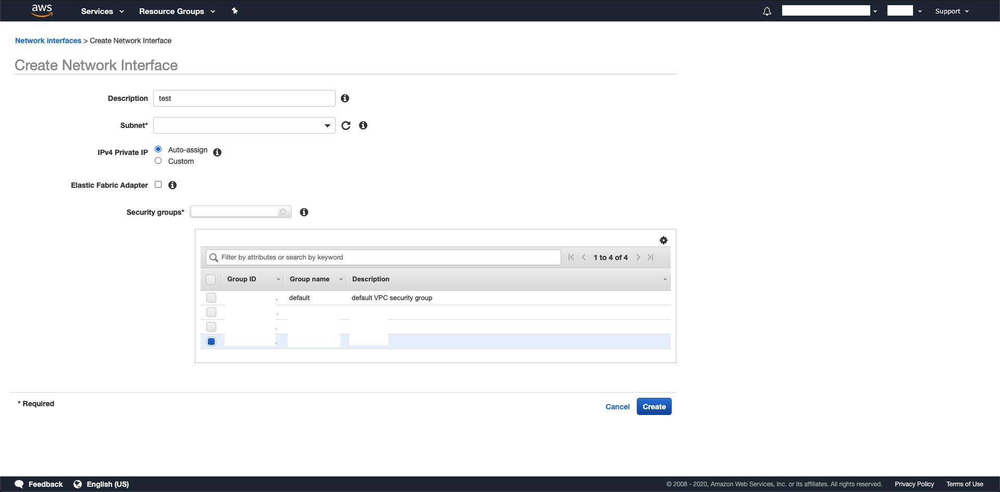 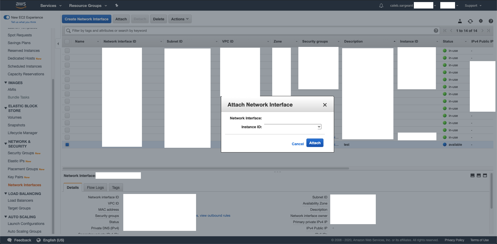Allocate an Elastic IP:
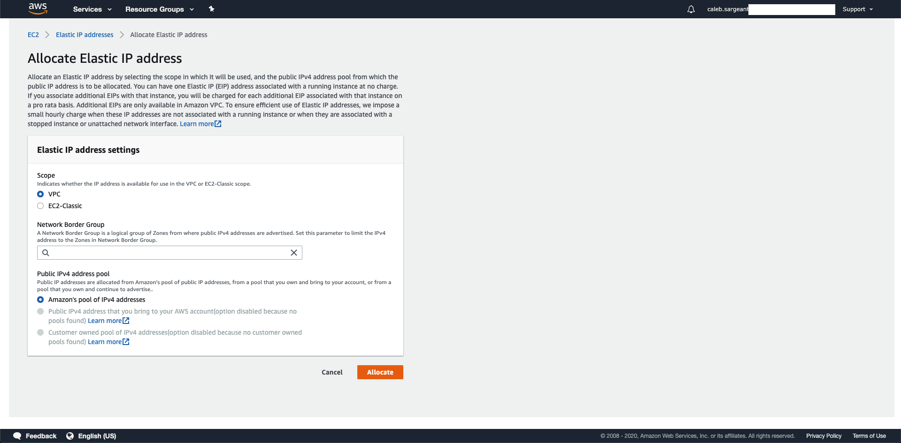Associate the created Elastic IP to your public (outside) interface:
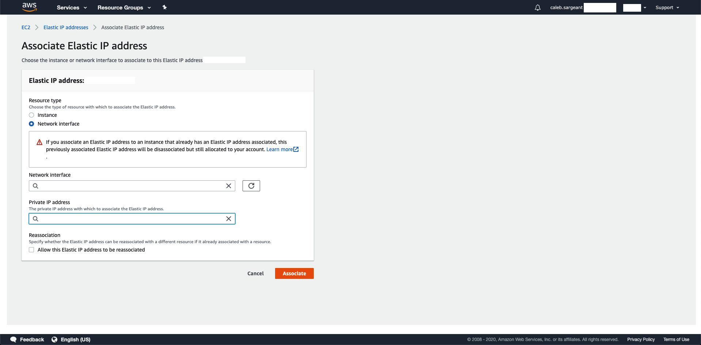Day 0 Configuration¶
In the below day 0 configuration, we will be disabling the management interface to have only 2 interfaces (outside, inside). Management will be done via outside, as per standard with physical ASAs in offices.
interface management0/0
management-only
nameif management
security-level 100
no ip address
no shut
!
interface g0/0
nameif outside
security-level 0
ip address dhcp setroute
no shut
!
interface g0/1
nameif inside
security-level 100
ip address dhcp setroute
no shut
!
same-security-traffic permit inter-interface
same-security-traffic permit intra-interface
!
crypto key generate rsa modulus 2048
ssh 0 0 management
ssh 0 0 outside
http 0 0 management
http 0 0 outside
ssh timeout 30
ssh scopy enable
http server enable 443
username admin SUPERSECUREPASSWORD privilege 15
username admin attributes
service-type admin
dns domain-lookup management
DNS server-group DefaultDNS
name-server 1.1.1.1
ntp server 169.254.169.123
Using S3 as Software Storage Location¶
https://aws.amazon.com/premiumsupport/knowledge-center/s3-aws-ip-addresses-access/
https://docs.aws.amazon.com/AmazonS3/latest/dev/example-bucket-policies.html
Create an S3 Bucket with the default settings (permission settings to follow):
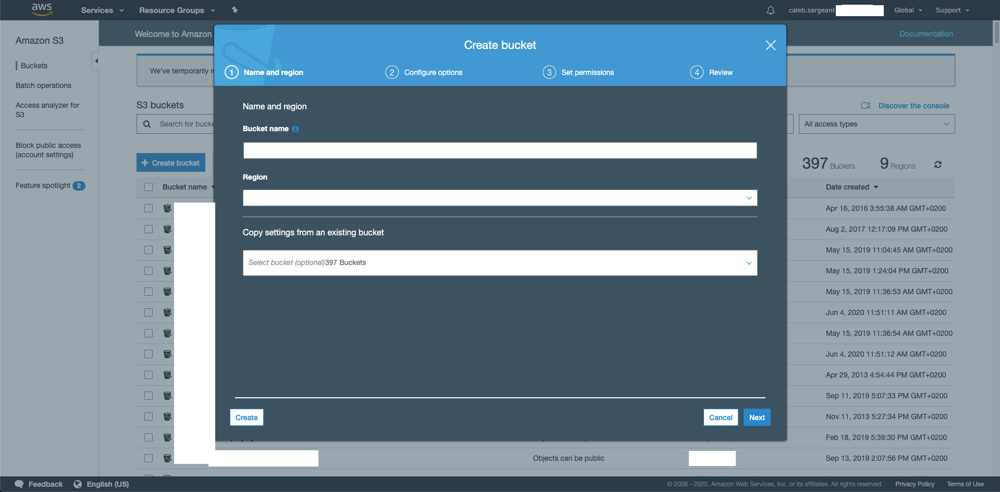 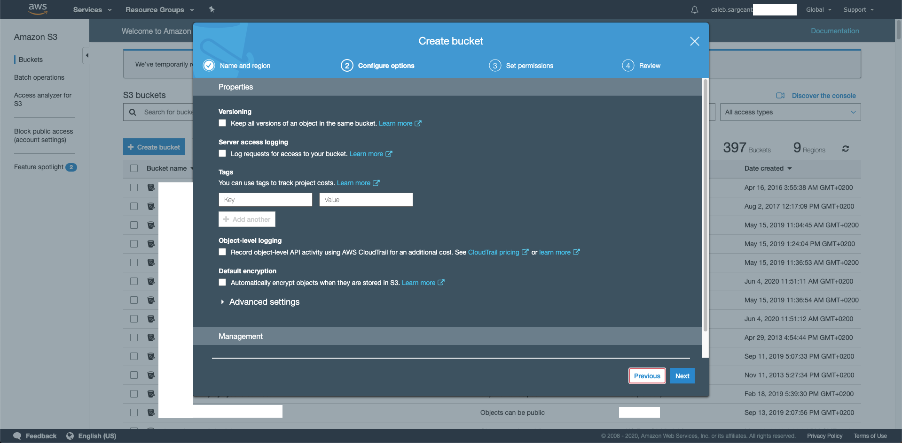 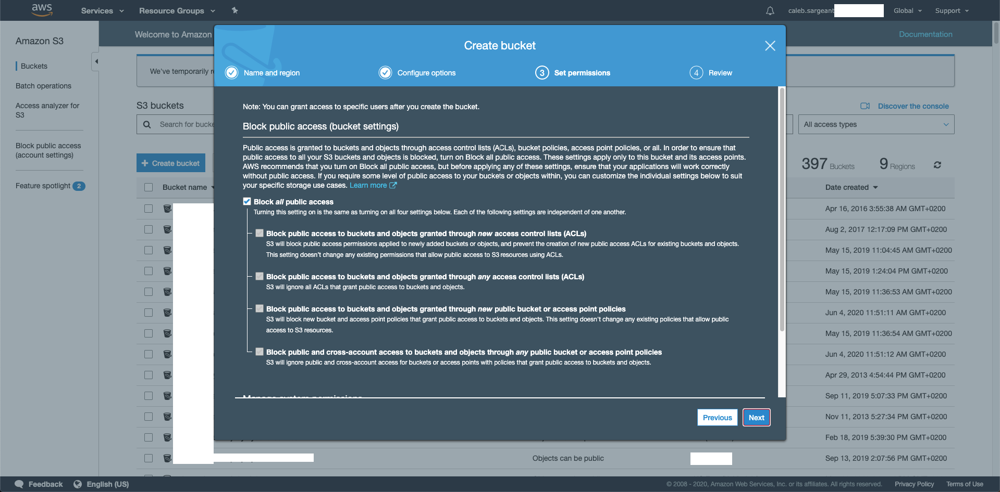
Modify the permission setting to allow a Bucket Policy (this could have been done in creating the bucket).
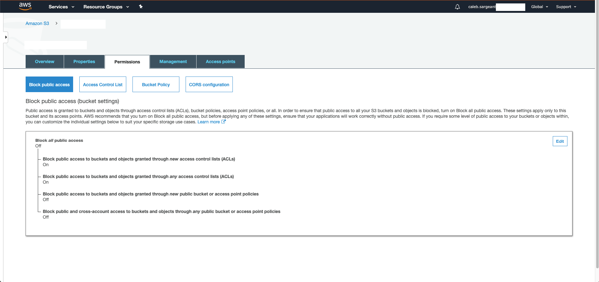Create the Bucket Policy:
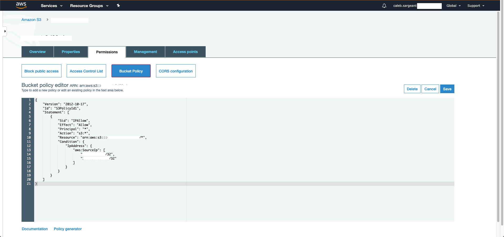The below bucket policy allows only x.x.x.x/32 and y.y.y.y/32 access.
{
"Version": "2012-10-17",
"Id": "S3PolicyId1",
"Statement": [
{
"Sid": "IPAllow",
"Effect": "Allow",
"Principal": "*",
"Action": "s3:*",
"Resource": "arn:aws:s3:::bucketname/*",
"Condition": {
"IpAddress": {
"aws:SourceIp": [
"x.x.x.x/32",
"y.y.y.y/32"
]
}
}
}
]
}
You can now copy files directly from the S3 bucket onto the ASA:
asa# copy https://bucketname.amazonaws.com/anyconnect-linux64-4.8.02042-webdeploy-k9.zip disk0:/anyconnect-linux64-4.8.02042-webdeploy-k9.zip
Address or name of remote host [bucketname.amazonaws.com]?
Source filename [anyconnect-linux64-4.8.02042-webdeploy-k9.zip]?
Destination filename [anyconnect-linux64-4.8.02042-webdeploy-k9.zip]?
Accessing https://bucketname.amazonaws.com/anyconnect-linux64-4.8.02042-webdeploy-k9.zip...!!!!!!!!!!!!!!!!!!!!!!!!!!!!!!!!!!!!!!!!
Writing file disk0:/anyconnect-linux64-4.8.02042-webdeploy-k9.zip...
!!!!!!!!!!!!!!!!!!!!!!!!!!!!!!!!!!!!!!!
40004376 bytes copied in 2.90 secs (20002188 bytes/sec)